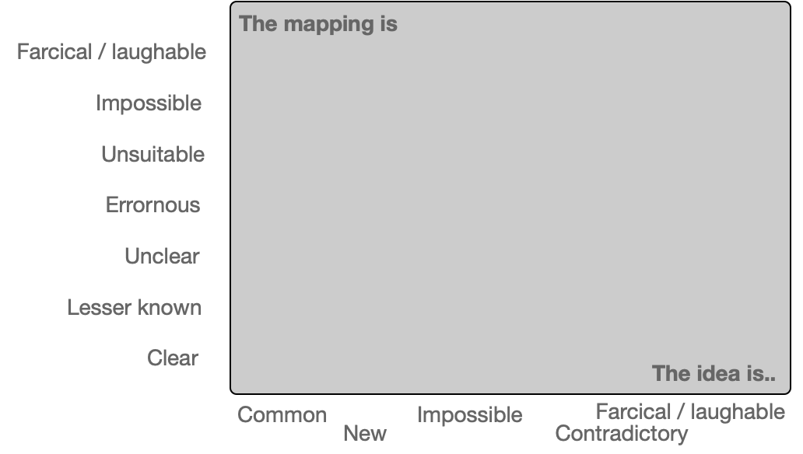
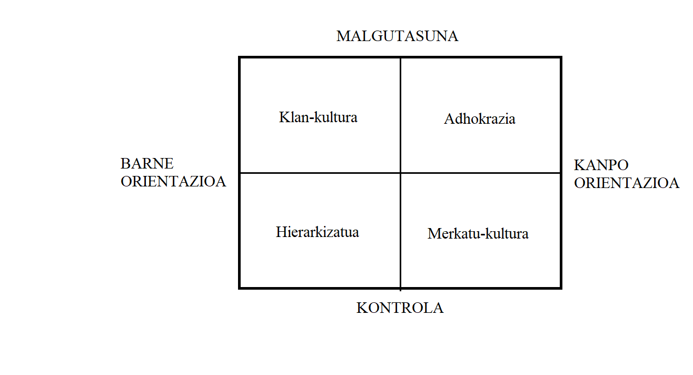
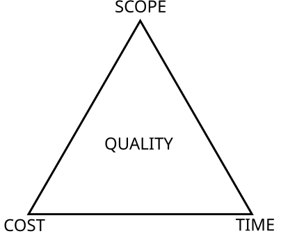

Tension map
About
A tension map lays out the competing values, constraints, or stakeholder needs that a design must hold in balance, making explicit the trade-offs that quietly shape every solution. Closely related to polarity mapping, it is oriented toward design decisions: speed versus thoroughness, privacy versus personalization, simplicity versus capability. By naming the forces pulling in opposite directions, the map turns hidden compromises into deliberate, discussable choices, and gives a team a shared picture of the terrain a solution has to navigate.
When to use
Use a tension map when requirements genuinely conflict, when you want to surface trade-offs before ideation rather than discover them late, and when stakeholders need to see and agree on the competing forces at play.
When not to use
Avoid a tension map when there is a clear right answer that research already supports, and remember that the map frames a decision rather than makes one — it should sharpen a choice, not become a substitute for committing to it.
References
Examples
Click any example to view full size and visit the original source.




